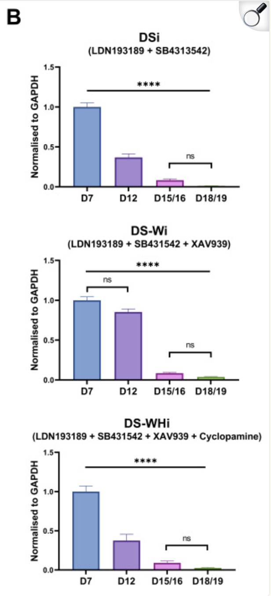
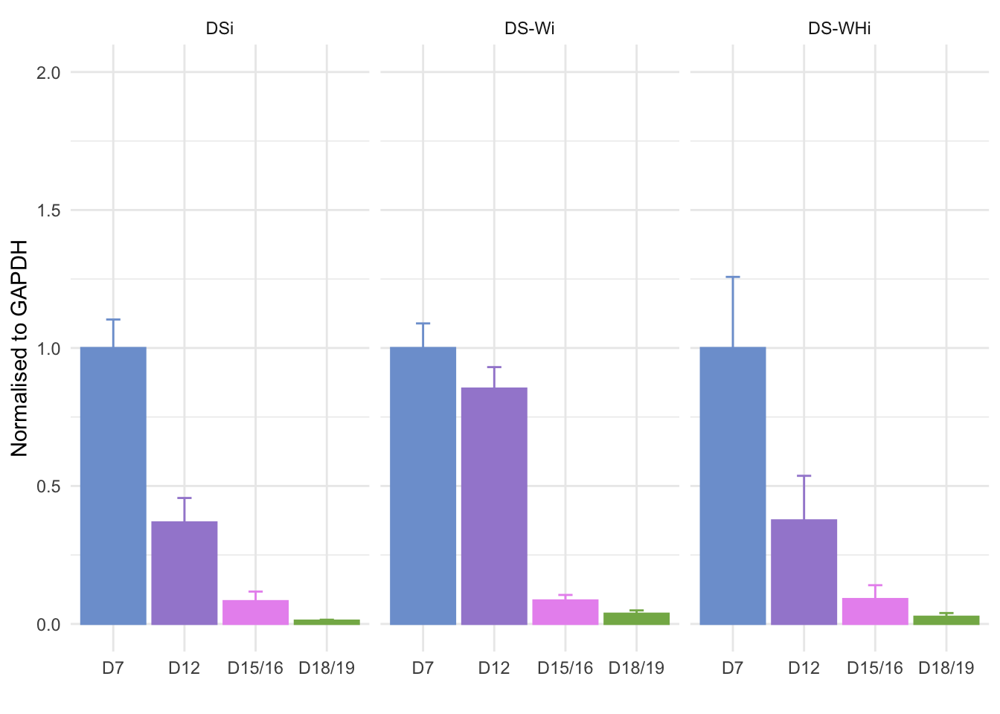
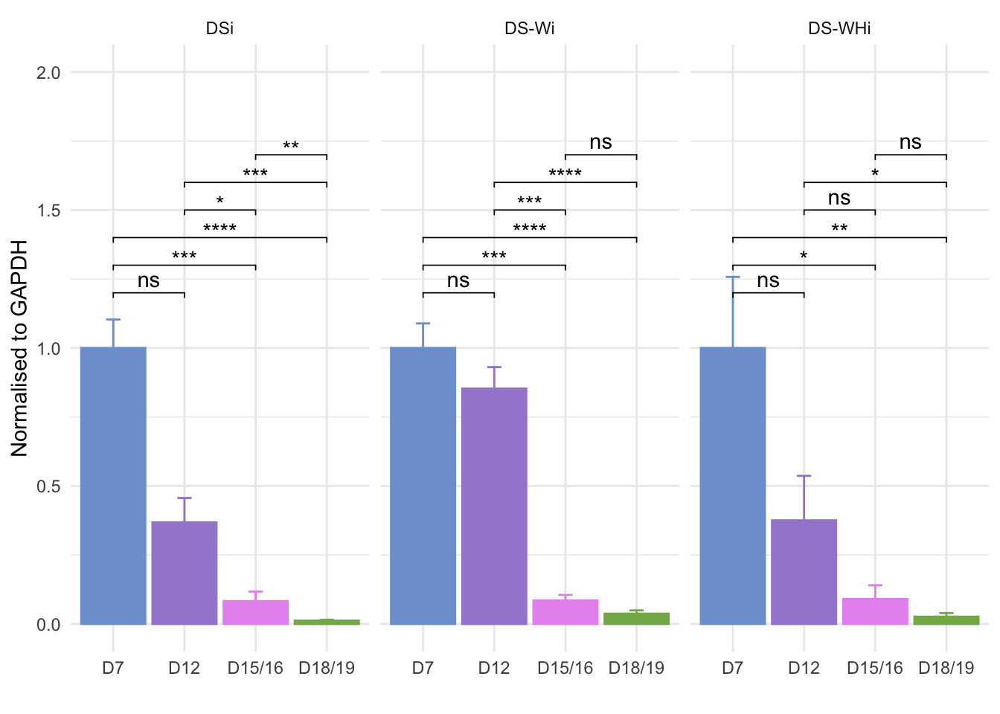

## Load libraries
library(tidyverse)
library(rstatix)
library(ggpubr)Homework exercise
Learning Objectives
- Download and tidy a qPCR dataset
- Plot the data with ggplot2
- Perform statistical analysis
- Compare results with the original paper
Task
In this exercise, you will be working with a qPCR dataset from a publication by Lee et al. (2020) investigating the role of APOE in human neural stem cell maintenance. You will download the dataset, tidy it, perform statistical analysis, and plot the results. Finally, you will compare your results with those reported in the original paper.
Publication summary
Lee et al. (2020) investigated the role of APOE in human neural stem cell maintenance.
Apolipoprotein E (APOE) is a multifunctional protein that plays significant roles in important cellular mechanisms in peripheral tissues and is also expressed in the central nervous system, notably by adult neural stem cells (NSCs) in the hippocampus.
Evidence from animal studies suggest that APOE is critical for adult NSC maintenance. However, whether APOE has the potential to play a similar role in human NSCs has not been directly investigated. To address this question, we conducted a focused study characterising APOE gene and protein expression in an in vitro model of neural differentiation utilising human induced pluripotent stem cells.
They found that APOE gene expression dramatically decreased as the cells became more differentiated, indicating that APOE expression levels reflect the degree of cellular differentiation during neural induction.
Figure 2B from the paper shows the qPCR results for APOE expression across different days of differentiation for three different differentiation lineages (DSi, DS-Wi, DS-WHi).
The data is presented as fold change normalised to GAPDH and relative to the day 7 samples.
The statistical analysis was performed using ANOVA with Bonferroni correction for multiple comparison.

Data
Start with this dataset, which contains the raw C(t) values for APOE and GAPDH across different days of differentiation for three different differentiation lineages (DSi, DS-Wi, DS-WHi).
Lee et al. (2020) qPCR dataset
The published dataset is available via Figshare. It contains the intermediate calculations used to group replicates, normalise and calculate delat C(t) and fold change. You might want to use this to check your intermediate results as you work through the exercise.
Analysis steps
- Load and explore the data
- Tidy the data
- Calculate delta C(t) and fold change
- Run ANOVA analysis for statistical testing
- Normalise fold change for plotting
- Calculate means for plotting
- Plot the data
- Add the statistical results to the plot
Resources
What is ANOVA?
We did not cover ANOVA in the lessons. ANOVA, or analysis of variance, is a statistical test used to compare the means of three or more groups. In this case, we want to compare the delta C(t) values across different days of differentiation for each differentiation lineage.
ANOVA is a parametric test with the following assumptions:
- The data is normally distributed within each group
- The variance of the data is similar across groups
There are two steps to performing ANOVA analysis:
- First, run the ANOVA test to determine if there are any significant differences between the groups.
- If the ANOVA test is significant, you then run post-hoc tests to identify which groups are significantly different from each other.
The most common post-hoc test for ANOVA is the Tukey HSD test, which compares all pairs of groups and adjusts for multiple comparisons.
Datanovia has a great tutorial on how to perform ANOVA analysis in R using the rstatix package.
Load and explore the data
Now load the data and explore it.
Solution
Solution.
qpcr <- read_csv("https://bifx-core3.bio.ed.ac.uk/training/DSB/data/APOE_qpcr.csv")
summary(qpcr) Sample APOE_C(t) GAPDH_C(t)
Length:72 Min. :23.13 Min. :13.74
Class :character 1st Qu.:24.77 1st Qu.:14.73
Mode :character Median :26.91 Median :15.11
Mean :26.99 Mean :15.41
3rd Qu.:28.80 3rd Qu.:16.29
Max. :31.58 Max. :17.24 Tidy the data
The data is not in a tidy format as the sample name contains information about the differentiation lineage, day of differentiation, biological replicate and technical replicate. We need to tidy the data by separating the sample name into these different variables and setting categorical variables as factors.
Solution
Solution.
## Separate sample column and set categorical variables as factors
qpcr_tidy <- qpcr |>
separate(Sample, into = c("Diff", "Day", "Biological_rep","Technical_rep"), sep = "_") |>
mutate(Biological_rep = Biological_rep |> str_remove("Biological Replicate "),
Technical_rep = Technical_rep |> str_remove("Technical Replicate "),
Diff = factor(Diff, levels = c("DSi", "DS-Wi", "DS-WHi")),
Day = factor(Day, levels = c("D7", "D12", "D15/16", "D18/19"), ordered = T)
)
qpcr_tidy# A tibble: 72 × 6
Diff Day Biological_rep Technical_rep `APOE_C(t)` `GAPDH_C(t)`
<fct> <ord> <chr> <chr> <dbl> <dbl>
1 DSi D7 1 1 24.9 16.9
2 DSi D7 1 2 25.3 17.2
3 DSi D12 1 1 26.5 16.2
4 DSi D12 1 2 26.4 16.5
5 DSi D15/16 1 1 29.1 16.3
6 DSi D15/16 1 2 29.4 16.1
7 DSi D18/19 1 1 30.4 16.2
8 DSi D18/19 1 2 31.6 16.3
9 DSi D7 2 1 24.0 16.3
10 DSi D7 2 2 24.6 16.2
# ℹ 62 more rowssummary(qpcr_tidy) Diff Day Biological_rep Technical_rep APOE_C(t)
DSi :24 D7 :18 Length:72 Length:72 Min. :23.13
DS-Wi :24 D12 :18 Class :character Class :character 1st Qu.:24.77
DS-WHi:24 D15/16:18 Mode :character Mode :character Median :26.91
D18/19:18 Mean :26.99
3rd Qu.:28.80
Max. :31.58
GAPDH_C(t)
Min. :13.74
1st Qu.:14.73
Median :15.11
Mean :15.41
3rd Qu.:16.29
Max. :17.24 Calculate delta C(t) and fold change
Calculate the mean C(t) for APOE and GAPDH for each sample, then calculate the delta C(t) for each sample. The mean for APOE and GAPDH should be calculated across technical replicates for each biological replicate. The delta C(t) should be calculated for each biological replicate separately.
The fold change should be calculated using the formula:
\[ Fold~Change = 2^{-ΔΔCt} \]
Where ΔΔCt is the difference between the delta C(t) for APOE and the controls (GAPDH).
This will give you the fold change for each biological replicate for each differentiation lineage and day.
You can refer to the case study in lesson 1 for more information on qPCR analysis.
Solution
Solution.
qpcr_mean <- qpcr_tidy |>
group_by(Diff, Day, Biological_rep) |>
summarise(mean_APOE_Ct = mean(`APOE_C(t)`),
mean_GAPDH_Ct = mean(`GAPDH_C(t)`)) |>
ungroup() |>
mutate(delta_Ct = mean_APOE_Ct - mean_GAPDH_Ct,
fold_change = 2^(-delta_Ct))
qpcr_mean# A tibble: 36 × 7
Diff Day Biological_rep mean_APOE_Ct mean_GAPDH_Ct delta_Ct fold_change
<fct> <ord> <chr> <dbl> <dbl> <dbl> <dbl>
1 DSi D7 1 25.1 17.1 8.03 0.00384
2 DSi D7 2 24.3 16.3 7.98 0.00396
3 DSi D7 3 23.7 15.2 8.48 0.00281
4 DSi D12 1 26.5 16.3 10.1 0.000883
5 DSi D12 2 25.3 16.3 9.03 0.00191
6 DSi D12 3 24.6 14.8 9.81 0.00111
7 DSi D15/16 1 29.2 16.2 13.0 0.000119
8 DSi D15/16 2 27.3 16.4 10.9 0.000529
9 DSi D15/16 3 26.9 14.9 12.1 0.000230
10 DSi D18/19 1 31.0 16.2 14.7 0.0000363
# ℹ 26 more rowsCheck if the data is normally distributed
The authors use ANOVA, which is a parametric test that assumes the data is normally distributed. We should check if our delta C(t) values are normally distributed before running the ANOVA. We want to check per group so will need to group by Diff and Day.
qpcr_mean |>
group_by(Diff,Day) |>
shapiro_test(delta_Ct)# A tibble: 12 × 5
Diff Day variable statistic p
<fct> <ord> <chr> <dbl> <dbl>
1 DSi D7 delta_Ct 0.818 0.157
2 DSi D12 delta_Ct 0.947 0.558
3 DSi D15/16 delta_Ct 0.996 0.875
4 DSi D18/19 delta_Ct 0.961 0.620
5 DS-Wi D7 delta_Ct 0.826 0.178
6 DS-Wi D12 delta_Ct 0.850 0.240
7 DS-Wi D15/16 delta_Ct 0.847 0.232
8 DS-Wi D18/19 delta_Ct 0.953 0.584
9 DS-WHi D7 delta_Ct 0.942 0.537
10 DS-WHi D12 delta_Ct 0.967 0.652
11 DS-WHi D15/16 delta_Ct 0.889 0.352
12 DS-WHi D18/19 delta_Ct 0.993 0.836The data is normally distributed in each group as the p-value is greater than 0.05.
Parametric tests also assume homogeneity of variance, which means that the variance of the data should be similar across groups. We should also check this assumption before running the ANOVA. The delta C(t) values should be similar across groups. We can check this using the levene_test() function.
qpcr_mean |>
group_by(Diff) |>
levene_test(delta_Ct ~ Day)# A tibble: 3 × 5
Diff df1 df2 statistic p
<fct> <int> <int> <dbl> <dbl>
1 DSi 3 8 0.786 0.534
2 DS-Wi 3 8 0.629 0.616
3 DS-WHi 3 8 0.235 0.870The data has homogeneity of variance within each differentiation as the p-value is greater than 0.05.
Both assumptions for ANOVA are met, so the authors were correct to select ANOVA for this analysis.
Run ANOVA analysis for statistical testing
ANOVA is a statistical test used to compare the means of three or more groups. In this case, we want to compare the delta C(t) values across different days of differentiation for each differentiation lineage.
For each differentiation lineage, run a one-way ANOVA to test for differences in delta_CT across days.
Use bonferroni correction to adjust the p-values for multiple comparisons.
HINT you can use the anova_test() function from the rstatix package to run the ANOVA and the adjust_pvalue() function to adjust the p-values for multiple comparisons.
Solution
Solution.
anova_results <- qpcr_mean |>
group_by(Diff) |>
anova_test(delta_Ct ~ Day) |>
adjust_pvalue(method = "bonferroni") |>
add_significance()If the ANOVA is significant, we then want to run post-hoc tests to identify which days are significantly different from each other.
The most common post-hoc test for ANOVA is the Tukey HSD test, which compares all pairs of groups and adjusts for multiple comparisons. There is an rstatix function that can be used to run the Tukey HSD test.
Solution
Solution.
posthoc_results <- qpcr_mean |>
group_by(Diff) |>
tukey_hsd(delta_Ct ~ Day) |>
add_significance()Relative fold change for plotting
In the paper, they plotted the fold change values relative to the mean of the D7 samples for each differentiation lineage.
Calculate the fold change values relative to the mean of the D7 samples for each differentiation lineage. The mean of D7 samples should be calculated across biological replicates for each differentiation lineage.
HINT You can add a new column to your dataframe that contains the mean fold change for D7 samples for each differentiation lineage e.g.
mutate(mean_D7_fc = mean(fold_change[Day == "D7"]))
Solution
Solution.
qpcr_relative <- qpcr_mean %>%
group_by(Diff) %>%
mutate(
mean_D7_fc = mean(fold_change[Day == "D7"]),
relative_fc = fold_change / mean_D7_fc
) |>
ungroup()
qpcr_relative# A tibble: 36 × 9
Diff Day Biological_rep mean_APOE_Ct mean_GAPDH_Ct delta_Ct fold_change
<fct> <ord> <chr> <dbl> <dbl> <dbl> <dbl>
1 DSi D7 1 25.1 17.1 8.03 0.00384
2 DSi D7 2 24.3 16.3 7.98 0.00396
3 DSi D7 3 23.7 15.2 8.48 0.00281
4 DSi D12 1 26.5 16.3 10.1 0.000883
5 DSi D12 2 25.3 16.3 9.03 0.00191
6 DSi D12 3 24.6 14.8 9.81 0.00111
7 DSi D15/16 1 29.2 16.2 13.0 0.000119
8 DSi D15/16 2 27.3 16.4 10.9 0.000529
9 DSi D15/16 3 26.9 14.9 12.1 0.000230
10 DSi D18/19 1 31.0 16.2 14.7 0.0000363
# ℹ 26 more rows
# ℹ 2 more variables: mean_D7_fc <dbl>, relative_fc <dbl>Calculate means for plotting
Finally, they calculated the mean fold change values for each differentiation lineage and day to plot the data. They also calculated the standard error of the mean (SEM) for each differentiation lineage and day to add error bars to the plot.
Calculate the mean and SEM (standard error of the mean) for relative fold change for each differentiation lineage and day. The mean should be calculated across biological replicates for each differentiation lineage and day. SEM can be calculated using the formula:
\[ SEM = \frac{SD}{\sqrt{n}} \] Where SD is the standard deviation of the relative fold change values for each differentiation lineage and day, and n is the number of biological replicates for each differentiation lineage and day.
HINT you can use sd() to calculate the standard deviation and n() to calculate the number of biological replicates for each differentiation lineage and day.
Solution
Solution.
qpcr_rel_means <- qpcr_relative |>
group_by(Diff, Day) |>
summarise(mean_relative_fc = mean(relative_fc),
sd_relative_fc = sd(relative_fc),
n = n(),
se_relative_fc = sd_relative_fc / sqrt(n)) |>
ungroup()
qpcr_rel_means# A tibble: 12 × 6
Diff Day mean_relative_fc sd_relative_fc n se_relative_fc
<fct> <ord> <dbl> <dbl> <int> <dbl>
1 DSi D7 1 0.179 3 0.103
2 DSi D12 0.368 0.153 3 0.0883
3 DSi D15/16 0.0827 0.0600 3 0.0346
4 DSi D18/19 0.0121 0.00555 3 0.00320
5 DS-Wi D7 1 0.154 3 0.0891
6 DS-Wi D12 0.853 0.135 3 0.0777
7 DS-Wi D15/16 0.0853 0.0342 3 0.0198
8 DS-Wi D18/19 0.0373 0.0204 3 0.0118
9 DS-WHi D7 1 0.446 3 0.258
10 DS-WHi D12 0.375 0.279 3 0.161
11 DS-WHi D15/16 0.0903 0.0867 3 0.0500
12 DS-WHi D18/19 0.0263 0.0228 3 0.0132 Plot the data
Make a bar plot of mean fold change per differentiation lineage and day. Split the plot by differentiation lineage. Colour the bars by day.
HINT look at geom_col() and geom_errorbar() for plotting the data.
Solution
Solution.
day_cols <- c("D7" = "#7DA0D4", "D12" = "#A48AD3", "D15/16" = "#E996EF", "D18/19" = "#83B355")
qpcr_plot <- ggplot(qpcr_rel_means, aes(x = Day, y = mean_relative_fc,
fill = Day, colour = Day)) +
geom_col() +
geom_errorbar(aes(ymin = mean_relative_fc - se_relative_fc,
ymax = mean_relative_fc + se_relative_fc),
width = 0.2) +
scale_fill_manual(values = day_cols) +
scale_colour_manual(values = day_cols) +
labs(x = "", y = "Normalised to GAPDH") +
guides(fill = "none", colour = "none") +
theme_minimal() +
coord_cartesian(ylim = c(0, 2)) +
facet_wrap(~ Diff, nrow = 1)
qpcr_plot
Add the statistical results to the plot
Use the results from the post-hoc tests to add significance bars to the plot. You can use the stat_pvalue_manual() function from the ggpubr package to add the significance bars.
This will be a bit tricky as we have faceting in our plot, so we need to manually set the y-positions for our brackets.
Solution
Solution.
# We want to manually set the bracket positions to handle the faceting in our plot
ph_res <- posthoc_results |>
group_by(Diff) |>
mutate(y.position = case_when(
Diff == "DSi" ~ c(1.2, 1.3, 1.4, 1.5, 1.6, 1.7),
Diff == "DS-Wi" ~ c(1.2, 1.3, 1.4, 1.5, 1.6, 1.7),
Diff == "DS-WHi" ~ c(1.2, 1.3, 1.4, 1.5, 1.6, 1.7)
)) |>
ungroup()
## Add stat_pvalue_manual to the plot
qpcr_plot + stat_pvalue_manual(ph_res, label = "p.adj.signif", tip.length = 0.01)
Compare results with the original paper
- Are the relative fold-changes the same?
- Are the SEM error bars the same?
- Are the significant differences between days the same?
There isn’t a lot of information in the paper about how they performed the statistical analysis, where do you think the differences in results might be coming from?
This is why it is important to publish the code used to perform the analysis alongside the paper, so that others can reproduce the results and understand how the analysis was performed.